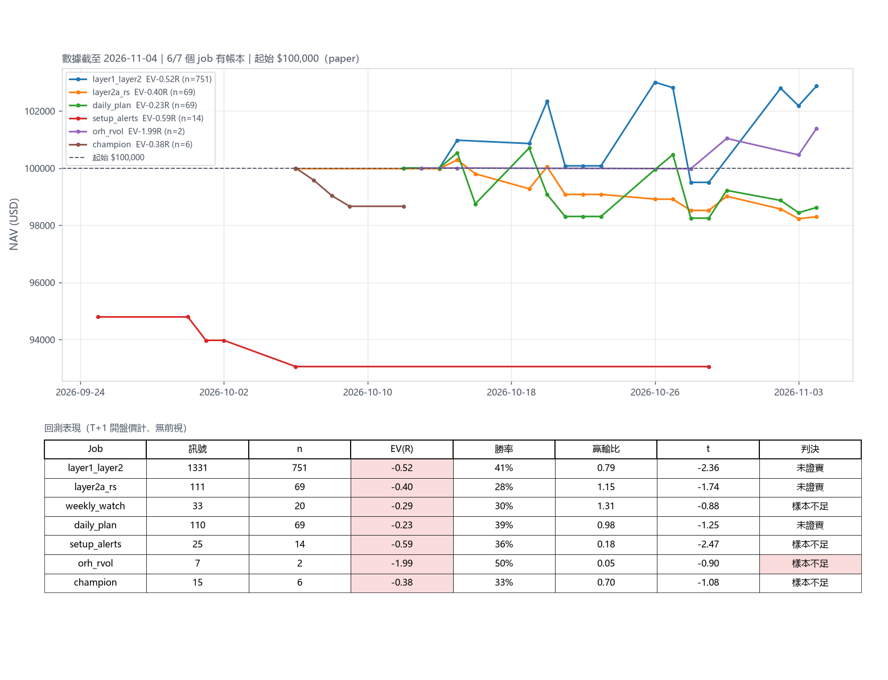
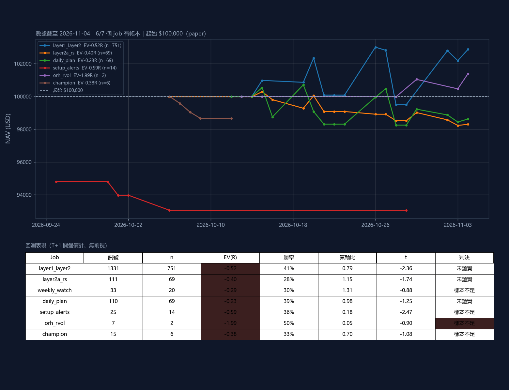

繁體中文版｜骨架蒸餾自 NEL · Market console（逆向工程）｜資料 2026-11-08 19:49


1TDiU6Wt0YYo…｜gid 634720175｜嵌入失敗時請直接開原 Sheet| 日期 | 2026-11-06 |
| 指數燈 | SPY ● QQQ ● IWM ● |
| 站上 20/50/200MA | 63.8% / 62.2% / 60.6% |
| 新高 / 新低 | 57 / 114 |
| 廣度判斷 | 參與度廣 — 突破可靠性高 |
| 領導 | 半導體 SOXX/SPY 相對 60 日 -23.9% — 領導力轉弱 |
| VIX | 恐慌升溫（高於全部均線）= 收細倉位 |
| 資料 | 2026-11-06T18:40:43.700593 |
| 範圍 | S&P500 (503 loaded) |
| Regime | NEUTRAL |
| Posture | FLAT_WATCH |
| 狀態 | WATCH_ONLY |
| 多空比 | 1.89 |
| ADL | 24.7 |
| 新高新低淨值 | 13.7 |
| 站上 40MA | 65.3% |
| SPY 收市 | 733.00 |
| 備註 | 儲住彈藥，等信號：冇符合 Setup C（<=50MA-2ATR）嘅均值回歸候選之前 = WATCH_ONLY |
| 日期 | 11/6/2026 |
| 升 4%+ 家數 | 262 |
| 跌 4%+ 家數 | 156 |
| 升/跌 比 | 1.68 |
| 5 日比率 | 0.75 |
| 10 日比率 | 0.84 |
| 升 25%+ (季) | 727 |
| 跌 25%+ (季) | 1,485 |
| 代號 / 行業 | 收市 | X（21EMA） | Y（ATRX） | ATR 帶 | 買入區 | 疊加 | Kell 階段 | 1CM 評級 |
|---|---|---|---|---|---|---|---|---|
| ELF↗ | 109.85 | -0.21 | +0.81 | ★ 買入區 | 5 | ⑥ Wedge Drop | B 觀察 3/5 | |
| CNMD↗ | 52.83 | +2.06 | +2.34 | — | 5 | ② Wedge Pop | C 邊緣 2/5 | |
| KNSA↗ | 88.34 | +0.41 | +1.36 | ★ 買入區 | 4 | ② Wedge Pop | C 邊緣 2/5 | |
| PACS↗ | 50.20 | +1.38 | +2.51 | — | 4 | ⑥ Wedge Drop | D 唔算 1/5 | |
| GCT↗ | 63.01 | +1.66 | +2.69 | — | 4 | ② Wedge Pop | C 邊緣 2/5 | |
| MAX↗ | 14.45 | +1.88 | +3.31 | — | 4 | ⑤ Exhaustion Extension | C 邊緣 2/5 | |
| AXGN↗ | 48.75 | +1.89 | +2.21 | — | 4 | ⑤ Exhaustion Extension | B 觀察 3/5 | |
| APPN↗ | 54.03 | +2.18 | +3.94 | — | 4 | ② Wedge Pop | C 邊緣 2/5 | |
| PNTG↗ | 40.00 | -0.69 | -0.10 | — | 3 | ⑥ Wedge Drop | D 唔算 0/5 | |
| GDDY↗ | 120.12 | +1.95 | +3.27 | — | 2 | ② Wedge Pop | C 邊緣 2/5 |